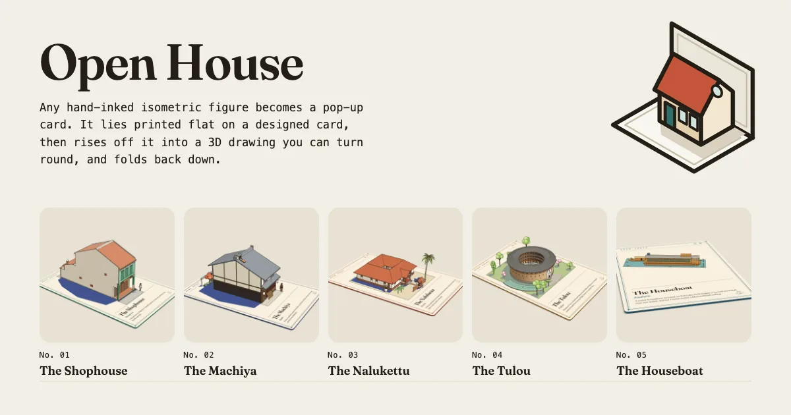
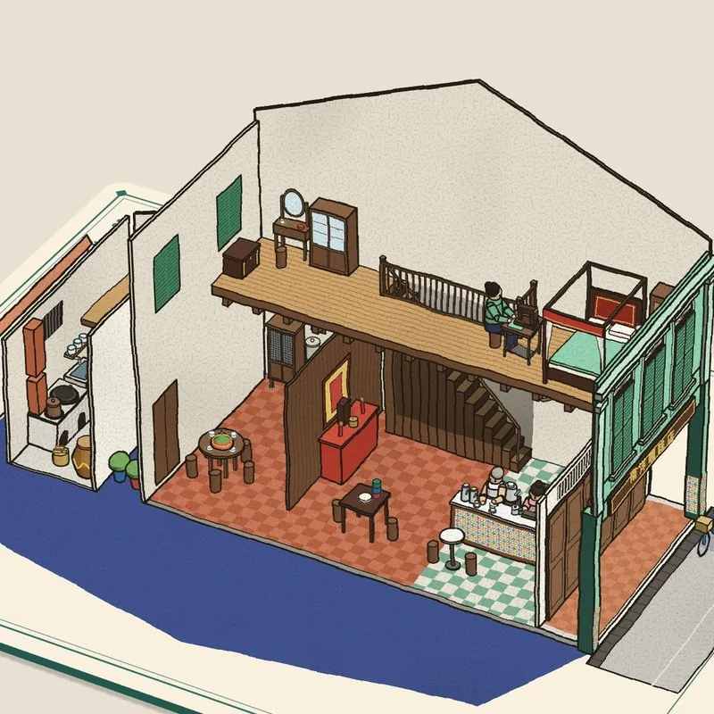
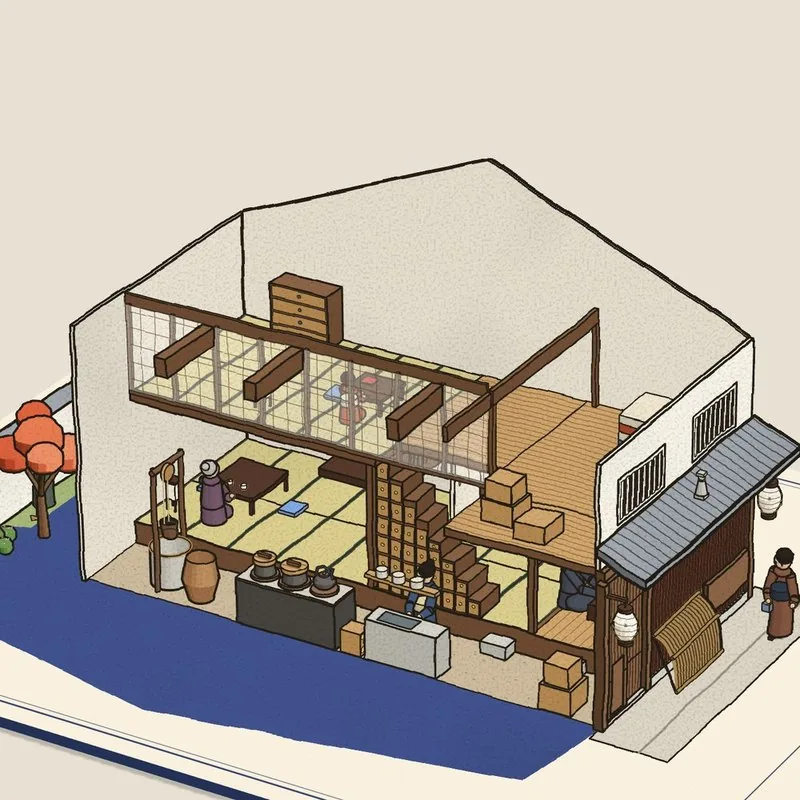
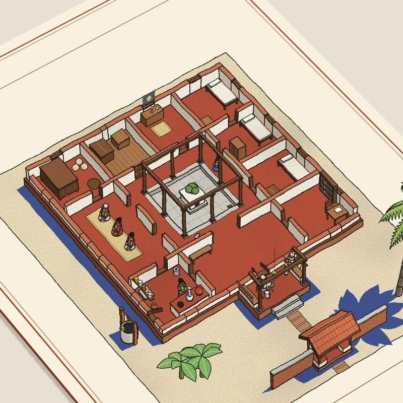
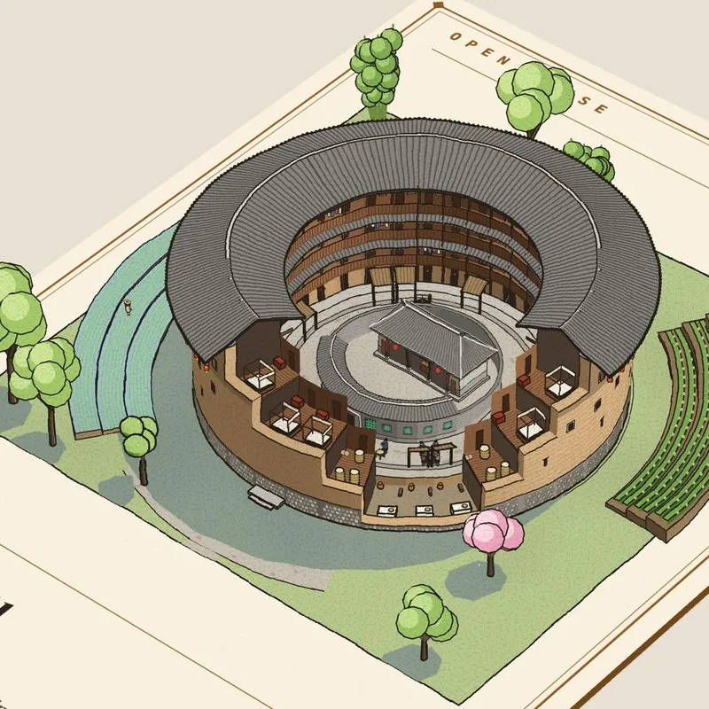
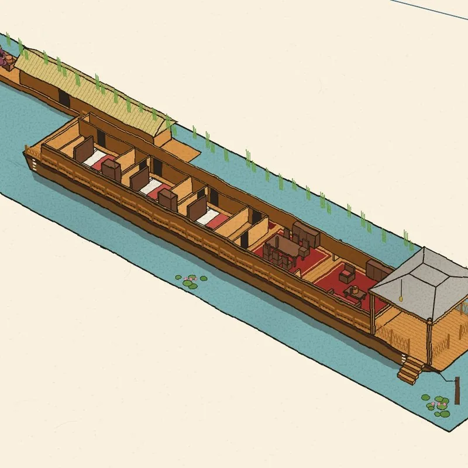
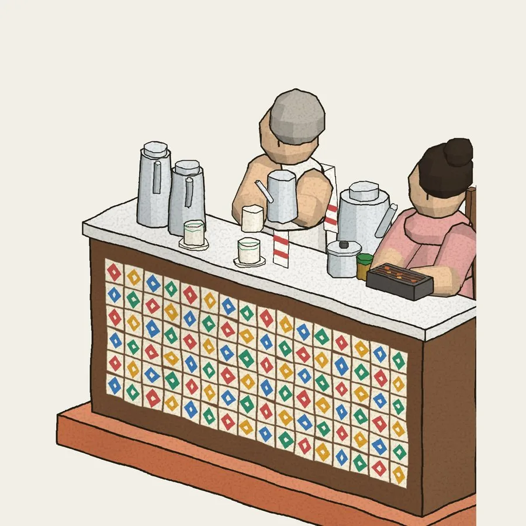
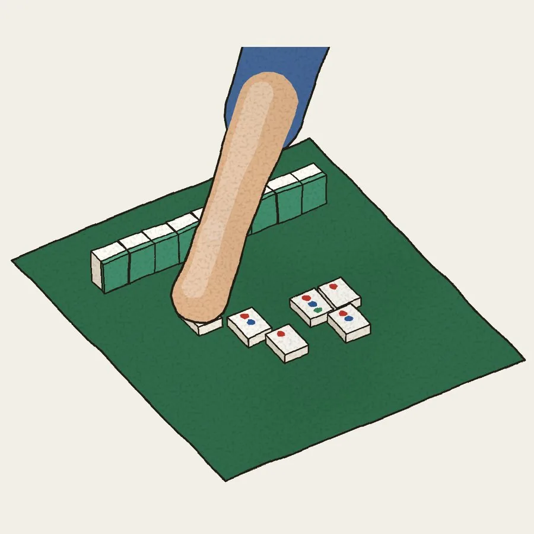
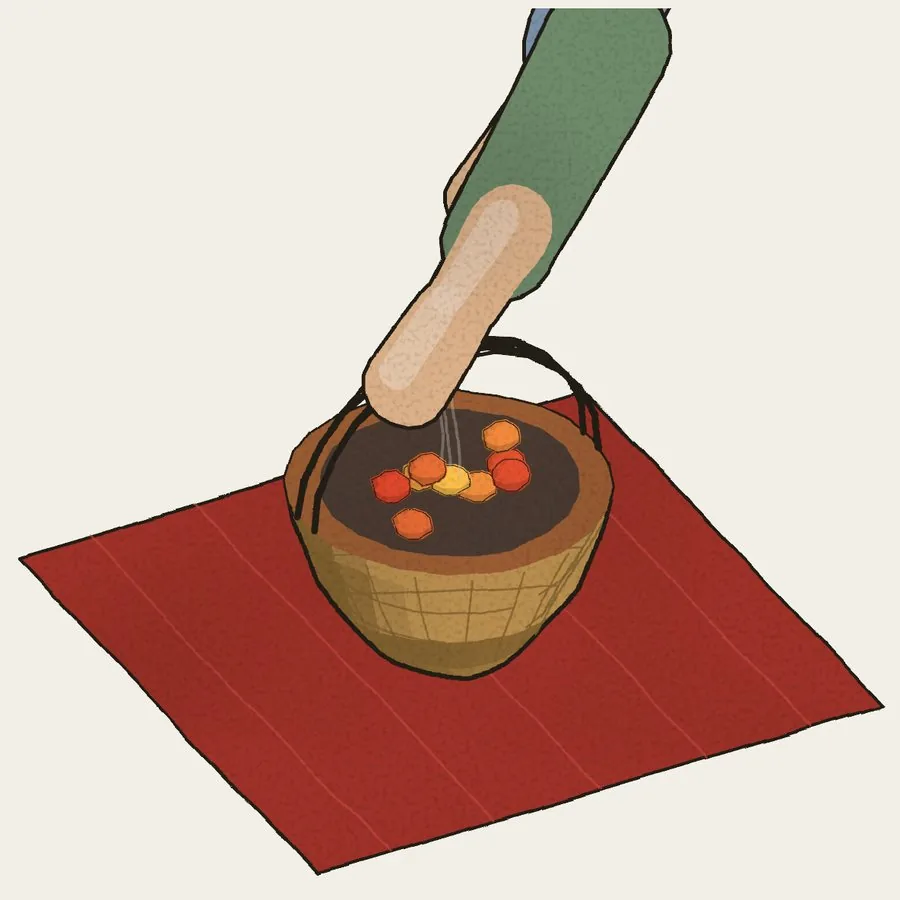
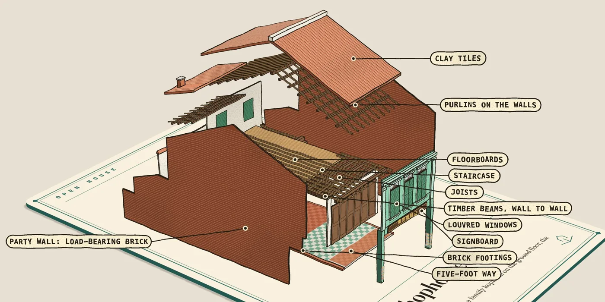

关于这一页
- 作者：April Zhu（X：@Aprilzz423）。核对依据：项目页页脚写“Made by April Zhu · @Aprilzz423”，并链回她的个人站 april-zhu.com；个人站首页自我介绍为产品架构师（Pendle、Boros 等 DeFi 产品的设计负责人）；Skill 压缩包里的 LICENSE 版权人也是 April Zhu。三处一致 ✅。
- 版权处理：这是作者本人的项目页，按本站惯例做全文中译，英文原文放在文末折叠附录。Skill 本身用的是作者自定的“个人、非商业许可”（不是开放许可，见下文），所以本站不转载 SKILL.md 和代码，只做导读和短引；压缩包请到原页下载。
- 页面上的互动：原页有可拖动的实时 3D 演示、每座房子一段录屏、一叠可翻的生活卡片。本页只放静态截图，视频和演示请到 原页 看。
项目页全文中译
Open House
一句话，变出一张立体弹出卡片。描述一座房子，或交出任何一张手绘描线的图，它会印在一张卡片上回到你手里，再从纸面升起，变成 3D。转一转，剖开看，拆开来，然后再把它折平。
〔按钮：下载 Skill（.zip）↓ · 演示 ↗〕
在 Claude Code 里安装
mkdir -p ~/.claude/skills && curl -fsSL https://april-zhu.com/openhouseskill/openhouse.tar.gz | tar -xz -C ~/.claude/skills粘贴到终端运行。用的是 Claude.ai？见下方其他安装方式。
每座房子都带着什么
| # | 功能 | 说明 |
|---|---|---|
| 01 | 一个真正的 3D 模型 | 房子从印着它的卡片上升起来。拖动可以转着看，看完再折平。 |
| 02 | 剖切视图 | 把墙切掉，看到里面每个房间，家具齐全。 |
| 03 | 带标注的爆炸图 | 房子按楼层一层层分开，每个部件都写着名字。 |
| 04 | 日常生活卡片 | 点一件日常小事，看它在剖切视图里发生，旁边有一张卡片讲背后的故事。 |





原页顶部的五宫格：每座房子剖开后的近景静帧（原页悬停会播放录屏，本站只取静帧）。图 © April Zhu。
演示
就在这里，实时运行。拖动可以转它，可以剖开、可以拆开，或者按一项日常活动，看它在屋里发生。
〔原页此处是嵌入的实时 3D 卡片，左侧可切换五座房子〕 在小册子里打开 ↗
五座房子，以及原页给每张卡片写的话（取自小册子，每张卡片自己的文字）：
| 编号 | 房子 | 地方 | 卡片上的话 |
|---|---|---|---|
| 01 | The Shophouse 店屋 | 新加坡 | 底层是一家人开的 kopitiam（咖啡店），楼上住着这一家；“五脚基”骑楼走廊把它和整条街的邻居连在一起。 |
| 02 | The Machiya 町家 | 京都 | 一座狭长的木造町屋，临街是店，店后是家，用木格子隔着。 |
| 03 | The Nalukettu 四合屋 | 喀拉拉 | 红土石与木材筑成的四翼，盖在同一片瓦顶下，围着一个露天庭院；季风的雨落进房子正中。 |
| 04 | The Tulou 土楼 | 福建 | 怀远楼：一圈四层高的夯土环楼，住着整个宗族，祖堂和学堂在院子中央。 |
| 05 | The Houseboat 船屋 | 克什米尔 | 停泊在斯利那加达尔湖上的一艘雪松木船屋：雕花游廊探在水面上，胡桃木房间顶着 khatamband（拼花木格）天花。 |
房子里的生活
每座房子都配有一套自己的日常生活卡片：早餐、仪式、家务、游戏。每张是一幅近景小画，配几行字，说它是什么、为什么重要。
〔挑一张卡片〕



原页五座房子共 25 张卡片，文字全部译出如下（标题保留原文，括号内为中文意译）：
展开 25 张生活卡片的文字
店屋 · 新加坡
- Kopi tarik（拉咖啡）：tarik 在马来语里是“拉”。咖啡从高处倒下，一遍又一遍，让它凉下来，也拉出一层泡沫。
- Kaya toast（咖椰吐司）：kopitiam 的早餐：吐司抹上咖椰（椰浆鸡蛋酱）和冰黄油，蘸着加了酱油和白胡椒的半熟蛋吃。
- Hanging the laundry（晾衣服）：洗好的衣服挂在从窗口伸出去的竹竿上，悬在街道上空，让太阳和风吹干：从老店屋街一直到今天的组屋，都是这幅景象。
- Cooking on the dapur（灶台做饭）：厨房在屋后，挨着天井：一座砖砌的灶，叫 dapur，锅下烧着木炭或柴火，烟从烟囱带走。
- Joss sticks（上香）：许多华人家庭在厅里设神台。点上香，举起来鞠一躬，插进香炉，敬神明和祖先。
町家 · 京都
- Matcha（抹茶）：抹茶粉用竹茶筅打到起泡，配一小块点心喝：给家人或客人的一碗茶。
- Cooking rice（煮饭）：米饭在 okudo-san（陶土灶，京都人家给灶加上敬称“さん”）上用铁锅煮：先小火，再大火。
- Uchimizu（打水）：大热天，在屋前街面洒水：水干的时候带走暑气，也是在迎客。
- Soroban（算盘）：掌柜在算盘上结一天的账，拨珠比写算式还快，再记进账簿。
- Origami（折纸）：孩子们把方纸折成鹤。纸鹤 orizuru 象征长寿：折满一千只，叫“千羽鹤”，是一个心愿。
Nalukettu · 喀拉拉
- Nilavilakku（铜灯）：每天黄昏点亮一盏铜灯，放在前门：sandhya deepam，迎好运进门的“暮灯”。
- Onam pookalam（欧南节花毯）：丰收节欧南节的十天里，每天早上在屋前一圈一圈铺一张花瓣地毯，迎接马哈巴利王回家。
- Sadya（欧南宴）：欧南节的盛宴：二十来道菜，在一张芭蕉叶上各有其位，坐在地上用手吃。米饭居中，浇上 sambar（扁豆蔬菜汤），最后是 payasam（甜粥）。
- Puttu and kadala（蒸米筒配黑鹰嘴豆咖喱）：喀拉拉的早餐：米粉和椰丝一层层压进竹筒，架在一锅水上蒸，整条推出来，配黑鹰嘴豆咖喱吃。
- Picking coconuts（摘椰子）：喀拉拉是椰树之乡。攀树人脚上套一圈绳往上爬，割下成熟的一串：椰子给人食物、油、绳子和屋顶茅草。
土楼 · 福建
- Gongfu tea（功夫茶）：在回廊上或院子里和邻居喝茶：一把小陶壶，几只顶针大的杯子，一泡接一泡地斟村子周围山上产的乌龙。
- The children’s lesson（孩子的功课）：“斯是室”是家族学堂。孩子们大声朗读启蒙书，一列一列，从上到下、从右到左，直到背熟。
- Incense for the ancestors（敬祖上香）：早晚各三炷香，插在堂前香炉里：简氏族人敬奉供在里面神台上的祖先牌位。
- Mahjong（麻将）：四个邻居，一张方桌，一晚上噼里啪啦的牌声：一座住着两百来口人的楼里，环楼某处总有一桌在打。
- Rolling tangyuan（搓汤圆）：元宵节和冬至：糯米团在掌心搓圆，煮了放进甜汤里吃。圆，是一家团圆。
船屋 · 克什米尔
- Kahwa from the samovar（铜茶炊里的卡瓦茶）：绿茶加藏红花、豆蔻、肉桂和杏仁片同煮，盛在中心管里烧着炭的铜茶炊里保温。不管船怎么倾，杯里的茶面始终是平的。
- The flower seller（卖花人）：卖花人划着 shikara 小船，一条船一条船地送莲花、玫瑰和万寿菊花环。客人们挤到游廊一侧去买，船就朝他们倾斜三分之一度。
- The kangri（火笼）：一个藤篮里装着盛炭火的陶罐，揣在 pheran（长羊毛袍）底下，陪人熬过克什米尔的冬天。湖面结冰时，一家人就紧挨着围坐。
- Wazwan（克什米尔宴）：克什米尔的盛宴：主厨 waza 把一长串肉菜一道道盛到四人共用的铜盘 trami 的米饭上。桌子一端坐了六位客人，船的重心就往前移。
- The doonga kitchen（伙房船）：看管船屋的 hanji 一家住在并排停靠的 doonga 船上，在甲板上的陶土灶做饭。每道菜都要端过跳板送到客人面前。
⚠️ 船屋几张卡片写到“船朝客人倾斜三分之一度”“重心前移”，像是演示里做了倾斜效果，本站没有运行演示核实。各地风俗描述为作者自写，本站只核对了土楼一张：怀远楼在福建南靖梅林镇坎下村，简氏家族 1905–1909 年建，高四层，中央祖堂兼书斋名“斯是室”，与百度百科、福建省台港澳办介绍一致 ✅；其余卡片未逐条核实。
每座房子都能拆开
要一张爆炸图，房子就一层层抬开，每个部件都有标注，让你看清它是怎么造起来的。它分开着从卡片上升起，然后再合拢落定。

一张图、一张卡、一条命令
卡片就是用这张图本身做的：平铺的印刷图和立起来的物体是同一幅画，先平放在卡片上，再通过一台真正的 3D 相机立起来。
- 一张图：用 Colorfigures 做一张（一句话描述一个物体），或者拿你已有的。
- 一张卡：给卡片几个词和一个颜色：名字、第二行、一句话、一个强调色。
{ "title": "The Tulou", "place": "Fujian", "accent": "#8c5a24" } - 一个页面：Claude 来跑构建。卡片是一个能独立运行的 HTML 文件，手机上也能用。
python3 scripts/build.py \ tulou.html card.json card.html
放进你自己的网页：随滚动升起的卡片
用 ?embed=1 嵌入一张卡片，然后告诉它什么时候升起、折下或休眠。
frame.contentWindow.postMessage({ oh: 'rise' }, '*')
// 还有 'fold'、'sleep'、'wake'试试看：一句话就行
- make an Open House card of a Moroccan riad（做一张摩洛哥庭院宅 riad 的 Open House 卡片）
- three Open House cards: a Swiss chalet, a Dutch canal house and a Malay kampung house（三张卡：瑞士木屋、荷兰运河屋、马来甘榜屋）
- turn my Colorfigures Icelandic turf house into a pop-up card（把我用 Colorfigures 画的冰岛草皮屋做成弹出卡片）
安装
| 环境 | 方式 | 步骤 |
|---|---|---|
| Claude Code | 一条命令 | 运行上方的 mkdir … | tar -xz -C ~/.claude/skills，粘贴到终端，然后重启 Claude Code。 |
| Claude.ai | 上传 Skill | 下载 openhouse.skill，在 设置 → 功能（Capabilities）→ Skills 里上传并打开。 |
| 手动 | 放入文件夹 | 下载 openhouse.zip 或 openhouse.tar.gz，解压后把 openhouse 文件夹移到 ~/.claude/skills/（或项目里的 .claude/skills/）。和负责画图的 Colorfigures 一起用效果最好。 |
⚠️ 原页的下载链接和“复制安装命令”按钮挂着一道“软邮箱墙”：首次点击会弹窗要求留邮箱（文案写“免费，留下邮箱立即解锁”，用于通知新 Skill 与更新）。命令文字本身在页面上公开可见。本站抓取时没有提交邮箱，也不转存压缩包。
常见问题
- 免费吗？
- 免费，限个人使用和玩。给你自己的家、你的家乡、你喜欢的地方做卡片，拿去分享吧。
- 能用于商业工作，或者卖我做出来的东西吗？
- 不能。请不要转卖这个 Skill 或它做出的卡片，也不要把它们用在商业工作、客户项目或产品里。
- 运行它需要什么？
- Claude Code，或打开了 Skills 功能的 Claude.ai。上面的安装步骤两种都讲了。
- 一座房子要多久？
- 一座完整的房子约 40 分钟。喀拉拉 nalukettu 带剖切图、带标注的建筑视图和五个日常场景，在一次 Claude Code 会话里用了 42 分钟。场景少、结构简单的房子会更快。
- 用多少 token？
- 那座 nalukettu 用了约 20 万输出 token。Claude 每一步还会重读整段对话，这会加上很多缓存输入，但缓存输入的计费低得多。
- 该用哪个模型？
- Claude Opus 5.5。这里的五座房子都是用它做的。Gemini Argon 也许也能出好结果。
- 能从我自己的画开始吗？
- 能。交给它任意一张手绘描线的等轴测图，它会印在一张弹出卡片上回来。和负责画图的 Colorfigures 一起用效果最好。
⚠️ 用时（40 / 42 分钟）与用量（约 20 万输出 token）为作者自报，本站未复现。“Gemini Argon 也许也行”是作者的推测说法。
页脚
Open House 个人与娱乐使用免费；不得转售或商用。它构建在 Colorfigures 之上，Colorfigures 基于 iso-glow 和 Tolga Cohce 的 iso-figure skill（MIT）。房子出自小册子 Open House。作者 April Zhu · @Aprilzz423
Skill 包导读（不转载）
本站按原页公开的安装命令取得 openhouse.tar.gz（约 89 KB，2026-10-31 11:50 UTC+8 取得）看了一遍。以下只是导读与短引，不转载正文和代码。
| 文件 | 作用 |
|---|---|
SKILL.md | 工作流（一张图、一个 card.json、一条构建命令）、自检方法、嵌入方法。 |
assets/card.js（442 行） | 卡片本身：卡面、相机和“升起”动画。 |
assets/core.js（641 行） | Colorfigures 绘图引擎；assets/examples/ 有烤面包机、夹子、台灯三张完整示例图，外加烤面包机的 card.json。 |
scripts/build.py / cfbuild.py | figure.html + card.json → 一个页面；后者是 Colorfigures 的页面构建。 |
LICENSE | 个人、非商业许可（见下）。 |
- 原理一句话：引擎原本的等轴投影交给一台 three.js 透视相机接管；图平躺时，每个点用它自身等轴视图的仿射变换“压”到卡面上，所以平面印刷图和立起来的模型在 t=1 与 t=0 时是同一幅画。SKILL.md 的原话是 “the flat print and the standing figure are the same drawing”。
- 卡面字段：
title（1–3 个词）、place（斜体第二行）、text（一句话，约两行）、no、series、accent（建议从物体主体色取、稍深一点）、paper、ink、bg，另有几项少用的版面参数。卡上的文字只能写物体上真实成立的事，“don't invent facts”。 - 自检：用无头 Chrome 拍三张：平躺、半途（
?t=.5）、立起（?state=live），逐项看构图、遮挡、阴影，再查data-errors和 NaN；最多修两轮。 - 嵌入：
?embed=1隐藏所有控件、背景透明；外层页面用postMessage发 rise / fold / sleep / wake。建议只在接近视口时加载 iframe，同时只保持一两张在运行，加载完成前先显示平面静帧。 - 依赖：生成的 HTML 从公共 CDN 加载 three.js 和 Fraunces 字体，不算完全离线。
许可证要点
- Open House、Colorfigures、iso-glow 三部分版权均为 April Zhu（2026），许可为“个人、非商业”：可以下载、安装、自己改、分享做出的卡片，“as long as nobody is paying for any of it”。
- 不可以：为钱或作为付费产品/服务的一部分出售、转售、再许可、再分发本 Skill（含改过的版本）；不可以把 Skill 或它产出的卡片、图形用于商业工作（客户项目、产品、广告、任何为赚钱做的东西）。免费分享 Skill 时须保留许可与署名。商用请联系作者。
- 源自 Tolga Cohce 的 iso-figure skill 的部分仍是 MIT 许可。
- 发布用它做的卡片时，作者请求（非强制）注明 Open House。
注意事项
- ⚠️ 不是开源许可：页面说“免费”，但只限个人非商业使用；用在工作项目、客户交付或带货内容里都不行。
- ⚠️ 邮箱墙：下载/复制安装命令会先弹窗要邮箱，邮箱用于通知新 Skill 与更新（退订写信给作者）。这是作者为自己后续作品收集联系人，属于自我推广，不涉及付费。
- ⚠️ 模型名与数字未核实：FAQ 推荐“Claude Opus 5.5”、提到“Gemini Argon”，以及 42 分钟、约 20 万输出 token，均为作者自报，本站未运行这个 Skill。
- ⚠️ 前置依赖：要做新物体，最好同时装作者的另一个 Skill Colorfigures（同样是个人非商业许可）；需要 Claude Code 或开启 Skills 的 Claude.ai（通常要付费套餐）。
- 页面没有 affiliate、utm 或广告链接；作者个人站另有 Colorfigures 与 Open House 小册子，均为同一作者的作品。
附录：英文原文
展开英文原文（April Zhu · Open House skill 项目页）
Visible page text, as fetched 2026-10-31 (UI labels included):
Open House
Demo ↗Made by April Zhu ↗
Open House
Pop-up cards, from a sentence. Describe a house, or hand over any hand-inked drawing, and it comes back printed on a card that lifts off the paper into 3D. Turn it round, cut it open, take it apart, then fold it flat again.
Download skill (.zip) ↓Demo ↗
Install in Claude Code
mkdir -p ~/.claude/skills && curl -fsSL https://april-zhu.com/openhouseskill/openhouse.tar.gz | tar -xz -C ~/.claude/skillsCopy
Paste in Terminal. Using Claude.ai? Other ways to install.
What every house comes with
01
A real 3D model
The house lifts off the printed card. Drag to turn it round, then fold it flat again.
02
Cut-out view
Slice the walls away and see every room inside, furnished.
03
Labelled exploded view
The house comes apart floor by floor, each part named.
04
Daily-life cards
Tap an everyday activity and watch it happen in the cut-out, with a card on the story behind it.
Demo
Live, right here. Drag to turn it, cut it open, take it apart, or press a daily-life activity and watch it happen inside.
Open it in the booklet ↗
Life inside the houses
Every house comes with its own cards of daily life: the breakfast, the ritual, the chore, the game. Each one is a close-up drawing with a few lines on what it is and why it matters.
Pick a card
Every house comes apart
Ask for an exploded view and the house lifts apart in layers, each part labelled, so you can see how it is built. It rises off the card apart, then settles together.
The Shophouse, Singapore: roof, floors and walls apart, every part named.
A figure, a card, one command
The card is made from the figure itself: the flat print and the standing object are one drawing, laid flat on the card, then stood up through a real 3D camera.
1A figure
Make one with Colorfigures (describe an object in one line), or bring one you already have.
2A card
A few words and a colour for the card: its name, a second line, a sentence, an accent.
{ "title": "The Tulou",
"place": "Fujian",
"accent": "#8c5a24" }
3One page
Claude runs the build. The card is one HTML file that works on its own, on a phone too.
python3 scripts/build.py \
tulou.html card.json card.html
On your own pageCards that rise as you scroll
Embed a card with ?embed=1 and tell it when to rise, fold or sleep.
frame.contentWindow.postMessage({ oh: 'rise' }, '*')
// also 'fold', 'sleep', 'wake'
TryAsk for it in a sentence
make an Open House card of a Moroccan riadthree Open House cards: a Swiss chalet, a Dutch canal house and a Malay kampung houseturn my Colorfigures Icelandic turf house into a pop-up card
Install
Claude Code
One command
mkdir -p ~/.claude/skills && curl -fsSL https://april-zhu.com/openhouseskill/openhouse.tar.gz | tar -xz -C ~/.claude/skillsCopy
Paste in Terminal, then restart Claude Code.
Claude.ai
Upload the skill
Download openhouse.skill ↓
Upload it in Settings → Capabilities → Skills, then switch it on.
By hand
Drop in the folder
openhouse.zipopenhouse.tar.gz
Unzip and move the openhouse folder into ~/.claude/skills/ (or .claude/skills/ inside a project). Works best next to Colorfigures, which draws the figure.
FAQ
Is it free?
Yes, for personal use and for fun. Make cards of your own house, your hometown, places you love, and share them.
Can I use it for commercial work or sell what I make?
No. Please don't resell the skill or the cards it makes, and don't use them in commercial work, client projects or products.
What do I need to run it?
Claude Code, or Claude.ai with skills switched on. The install steps above cover both.
How long does a house take?
About 40 minutes for a full house. The Kerala nalukettu, with its cut-out, labelled architecture view and five daily-life scenes, took 42 minutes in one Claude Code session. A simpler house with fewer scenes is quicker.
How many tokens does it use?
The nalukettu used about 200k output tokens. Claude also re-reads the conversation on every step, which adds a lot of cached input, but that is billed at a much lower rate.
Which model should I use?
Claude Opus 5.5. All five houses here were built with it. Gemini Argon may give you good results too.
Can I start from my own drawing?
Yes. Hand over any hand-inked isometric figure and it comes back printed on a pop-up card. It works best next to Colorfigures, which draws the figure.
Close ×
←→
Open House is free for personal and fun use; no resale or commercial use. It is built on Colorfigures, which is based on iso-glow and on Tolga Cohce's iso-figure skill (MIT). The houses come from Open House, the booklet. Made by April Zhu · @Aprilzz423
The five houses (card words)
- The Shophouse, Singapore: A family kopitiam on the ground floor, the family upstairs, and the five-foot way joining it to its neighbours along the street.
- The Machiya, Kyoto: A narrow wooden townhouse with the shop at the street and the home behind it, screened by wooden lattices.
- The Nalukettu, Kerala: Four wings of laterite and timber under one tiled roof, built round an open courtyard where the monsoon falls into the middle of the house.
- The Tulou, Fujian: Huaiyuan Lou: one ring of rammed earth four storeys high, home to a whole clan, with the ancestral hall and school in the courtyard.
- The Houseboat, Kashmir: A cedar houseboat moored on Dal Lake in Srinagar: a carved verandah over the water, walnut rooms under a khatamband ceiling.
Daily-life cards
The Shophouse, Singapore
- Kopi tarik: Tarik means 'pull' in Malay. The kopi is poured from a height, again and again, to cool it and give it a froth.
- Kaya toast: The kopitiam breakfast: toast spread with kaya (a coconut and egg jam) and cold butter, dipped into soft-boiled eggs with soy sauce and white pepper.
- Hanging the laundry: Washing goes out on bamboo poles pushed through the windows, over the street, to dry in the sun and the breeze: a sight from old shophouse streets to HDB flats today.
- Cooking on the dapur: The kitchen sat at the back, by the airwell: a brick stove, the dapur, burning charcoal or firewood under the wok, its smoke carried off by the chimney.
- Joss sticks: Many Chinese families keep an altar in the hall. Joss sticks are lit, held up with a bow, and set in the urn for the gods and the ancestors.
The Machiya, Kyoto
- Matcha: Powdered green tea is whisked with a bamboo chasen until it froths, then drunk with a small sweet: a bowl of tea for the family or a guest.
- Cooking rice: Rice was cooked in an iron pot on the okudo-san, the clay stove (Kyoto families give it the honorific -san): a low fire first, then a high one.
- Uchimizu: On hot days water is sprinkled on the street in front of the house: it cools the air as it dries, and welcomes the customers.
- Soroban: The shopkeeper adds up the day on the soroban, the abacus, flicking the beads faster than he could write the sums, and enters them in the ledger.
- Origami: Children fold squares of paper into cranes. The crane, orizuru, stands for a long life: folding a thousand of them, senbazuru, is a wish.
The Nalukettu, Kerala
- Nilavilakku: Every evening at dusk a brass lamp is lit and set at the front door: sandhya deepam, the evening light that welcomes good fortune into the house.
- Onam pookalam: For the ten days of Onam, the harvest festival, a carpet of flower petals is laid in front of the house each morning, ring by ring, to welcome King Mahabali home.
- Sadya: The Onam feast: a score of dishes, each in its own place on a banana leaf, eaten by hand sitting on the floor. Rice in the middle, sambar poured over it, payasam at the end.
- Puttu and kadala: Breakfast in Kerala: rice flour and grated coconut packed in layers into a tube, steamed over a pot of water, and pushed out whole. Eaten with black chickpea curry.
- Picking coconuts: Kerala is the land of the coconut palm. A climber goes up with a loop of rope round his feet and cuts the ripe bunch: the nuts give food, oil, rope and thatch.
The Tulou, Fujian
- Gongfu tea: Tea with a neighbour on the gallery or in the courtyard: a tiny clay pot, thimble cups, and pour after short pour of oolong from the hills round the village.
- The children’s lesson: The Sishi Shi was the family school. The children read the primer aloud, column by column, top to bottom and right to left, until they knew it by heart.
- Incense for the ancestors: Three sticks in the burner before the hall, morning and evening: the Jian family honour the ancestors whose tablets stand on the altar inside.
- Mahjong: Four neighbours, one square table, an evening of clattering tiles: in a house of some two hundred people there is always a game somewhere round the ring.
- Rolling tangyuan: For the Lantern Festival and the winter solstice: balls of glutinous rice dough rolled between the palms, boiled and eaten in a sweet soup. Round for a family together.
The Houseboat, Kashmir
- Kahwa from the samovar: Green tea brewed with saffron, cardamom, cinnamon and slivered almonds, kept hot in a copper samovar with burning charcoal in its central tube. The tea in the cup stays level however the boat leans.
- The flower seller: Shikara sellers paddle from boat to boat with lotus, roses and marigold garlands. The guests crowd the verandah on one side to buy, and the boat leans a third of a degree toward them.
- The kangri: An earthen pot of embers in a wicker basket, carried under the pheran, the long woollen gown, through the Kashmiri winter. When the lake freezes, the family sit close round them.
- Wazwan: The Kashmiri feast: a long run of meat courses that the waza, the master cook, serves onto a copper trami of rice shared by four. Six guests at one end of the table move her centre of gravity forward.
- The doonga kitchen: The hanji family who keep the houseboat live on the doonga moored alongside, and cook on a clay stove on its deck. Every dish is carried across the plank to the guests.